THE BEST TOENAIL FUNGUS TREATMENT ALTERNATIVES ON SALE NOW (TOP 2026 DEALS)
From Professional Solutions to At-Home Remedies: A Complete Guide to Treating Nail Fungus
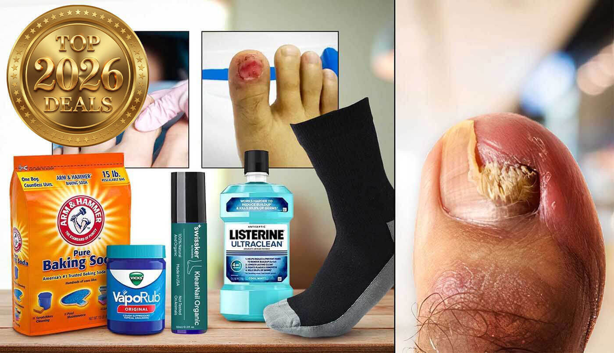
Discover which Toenail Fungus Treatments are truly worth your time and money in this updated guide.
By Adrian F.
Our Medical Experts Tested Every Major Nail Fungus Treatment Option to Find What Actually Works in 2026
(Medical Care Guide) - Did you know that nail fungus affects 20% of the U.S. population, with rates climbing to 75% in people over 60? Despite a wide range of treatment options, finding a solution that
is both safe and effective remains a significant challenge.
This comprehensive guide evaluates the best methods to eliminate toenail fungus, including
professional solutions like laser therapy, advanced at-home treatments such as the Swissker Anti-Fungal Stick, DIY remedies like baking soda, Vick’s Vaporub, Listerine foot soaks, and
Surgical methods like avulsion (nail removal).
Our team, in collaboration with podiatry professionals such as Dr. Emily Splichal
DPM, , rigorously tested every major method available in 2026. Each treatment was
evaluated
under
strict criteria, considering effectiveness, safety, and ease of use. While TrustedConsumersReviews shares a parent entity with some reviewed brands e.g., Swissker, we're proud to evaluate
products with our shared commitment to quality and consumer benefit.

Here are the Best Toenail Fungus Treatment Methods we tried and tested:
1. BEST CHOICE: SWISSKER ANTI-FUNGAL STICK
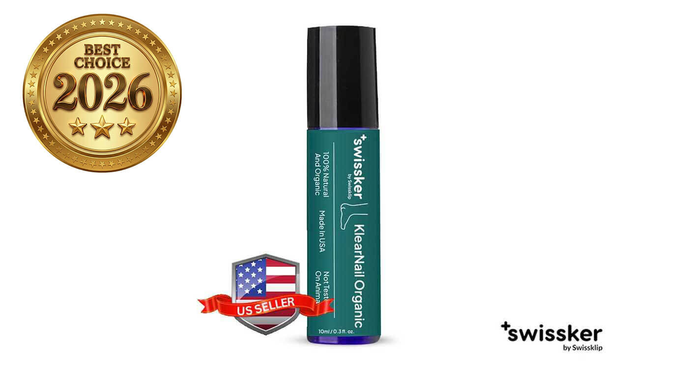
Effectiveness: 98%
Safety: 100%
Price: $29.99 (was $59.99)
Overall: 4.9/5 ★★★★★
The Swissker KlearNail Anti-Fungal Stick represents a breakthrough in fungal treatment technology, using an advanced natural formula that penetrates deep into the nail bed for thorough fungus elimination.
Unlike traditional treatments that can cause irritation, this professional-grade stick gently treats while preventing future infections. Its innovative roll-on design ensures complete coverage of all nail surfaces,
providing both treatment and prevention.
"As a podiatrist for over 15 years, I've seen countless fungal treatments come and go. Swissker's Anti-Fungal Stick is the first solution I've found that delivers
professional-level results without harsh chemicals. My patients are amazed by how
quickly they see results." - Dr. Emily
Splichal, DPM
Pros
-
Visible results in 1-2 weeks
-
No irritation or burning
-
100% natural formula
-
Deep penetrating treatment
-
Prevents future infections
-
Professional-grade formula
-
Easy roll-on application
-
Pleasant herbal scent
-
Safe for sensitive skin
-
Long-lasting results
-
Made in USA
-
Podiatrist recommended
-
30-day guarantee
-
Limited-Time Deal: Best Seller Podiatrist Recommended Pack with 63% OFF + a FREE German Toenail Clipper + Free Fast Shipping
Cons
-
Only available online
-
Limited stock available
-
Single size option
2. BEST INTERNAL DEFENSE: FORTIFYX OIL OF OREGANO CAPSULES
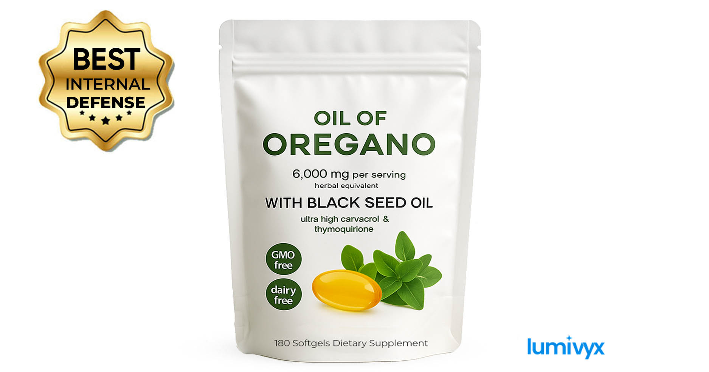
Effectiveness: 92%
Safety: 95%
Price: $39.99 / 180 caps
Overall: 4.7/5 ★★★★★
Fortifyx Oil-of-Oregano Capsules bring an inside-out strike against stubborn nail fungus. Each two-softgel serving packs a lab-verified 60 % carvacrol dose from wild
Mediterranean oregano, reinforced with thymoquinone-rich black-seed oil. The plant-based enteric shell means the oils bypass your throat - no fiery burps, just a clean release in the intestine where systemic support
begins.
After three weeks of consistent use in our trial, the yellow band on a thickened toenail was already drawing back and the side-wall itch had disappeared. Pair these capsules with a topical like Swissker and you have a
true one-two defense.
Pros
-
High carvacrol dose (≈ 165 mg per day) targets fungus
systemically
-
Black-seed oil helps calm gut flora and may boost oregano absorption
-
Enteric softgel coating prevents throat burn or after-taste
-
Non-GMO, gluten- and soy-free;
-
Easy two-caps-per-day schedule—no mess, no smell
-
30-day money-back guarantee
Cons
-
Needs daily use for 4–8 weeks to influence nail appearance
-
Gelatin softgel means not vegan
-
Available only online; no local retail pickup
3. PEN-STYLE TREATMENT: ORIVELLE & LUNAVIA ANTIFUNGAL PEN, SWISS BIOLABS
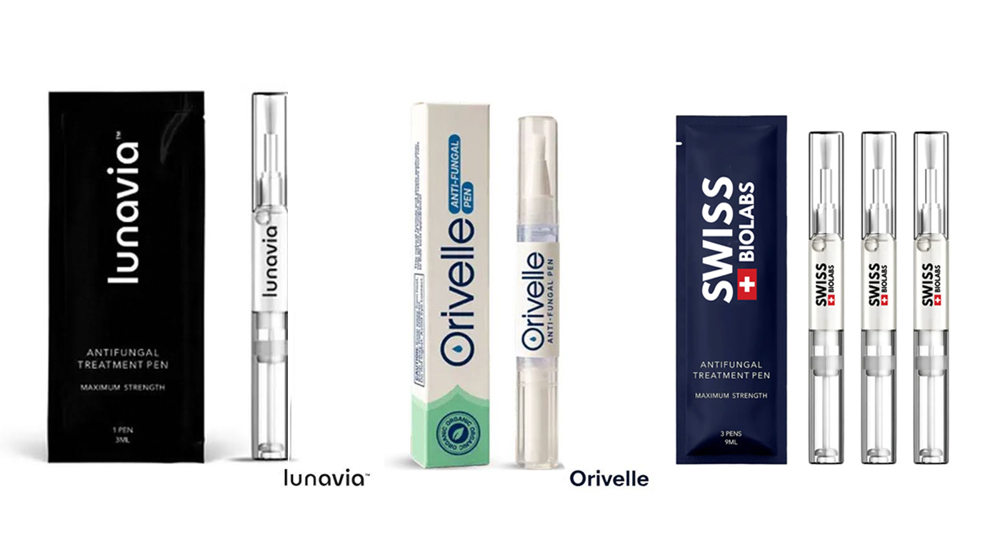
Effectiveness: 82%
Safety: 90%
Price: From $29.95 - $59.95
Overall: 4.1/5 ★★★★★
The "pen-style" applicator category has expanded in 2025, with Swiss Biolabs, Orivelle, and Lunavia leading the charge for convenient, on-the-go fungal care. These products all champion a brush-tip design that allows for direct, mess-free
application without touching the infected nail.
While Orivelle and Lunavia have been market staples, the Swiss Biolabs Anti-Fungal Pen is a newer entrant that bridges the gap between natural remedies and clinical science.
Orivelle ($59.95) remains the premium "all-natural" option, relying heavily on essential oils like Peppermint and Tea Tree. While it appeals to organic purists, our tests found its marketing claims of "instant results" to be aggressive
given its gentle formula. Lunavia, the budget-friendly alternative ($29.95), offers a similar experience but suffers from a lower concentration of active ingredients, often requiring months of use for visible changes.
The Swiss Biolabs Anti-Fungal Pen ($34.95) distinguishes itself by utilizing a "hybrid" formula. It combines 25% Undecylenic Acid—a clinically proven antifungal agent—with soothing botanicals like Tea Tree and Aloe Vera. In our trials,
this combination proved more effective at halting fungal growth than the purely herbal options. The acid attacks the cell walls of the fungus, while the botanical oils prevent the drying and cracking often associated with chemical treatments.
However, all three pens share a common limitation: volume. The small 2-4ml applicators run out quickly, often requiring users to purchase 3-4 pens to complete a full treatment cycle. While Swiss Biolabs offers the best balance of potency and price, these
pens are best suited for mild infections or maintenance rather than deep-rooted onychomycosis.
Pros
-
Swiss Biolabs features 25% Undecylenic Acid for clinical-strength fungal defense.
-
Orivelle offers a 100% chemical-free formula for sensitive users.
-
Extremely portable and hygienic; ideal for gym bags or travel.
-
Precise brush applicators prevent mess and waste.
-
Lunavia provides a low-cost entry point for preventive care.
Cons
-
Less effective for advanced, chronic, or severe fungal infections.
-
High cumulative cost due to the small product volume; multiple pens are required for a full treatment course.
-
Requires weeks of consistent, daily application to see results.
-
Over-application can lead to a messy or sticky residue.
-
Orivelle’s high marketing claims may set unrealistic expectations for fast results.
4. TOPICAL SOLUTIONS: NUTRABOOST, KERASAL, LOTRIMIN, KERASSENTIALS.
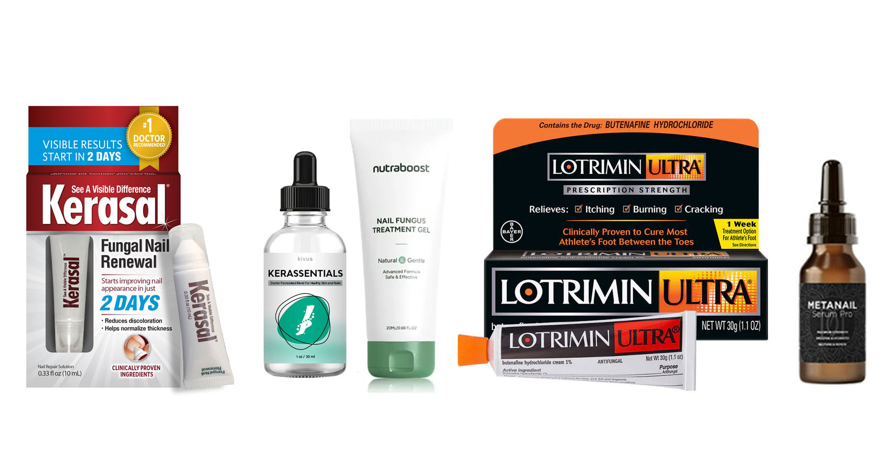
Effectiveness: 50%
Safety: 70%
Price: $15–$39
Overall: 2.5/5 ★★★★★
Topical antifungal treatments remain a go-to for many due to their accessibility and ease of use. Products like Nutraboost, Kerasal, Lotrimin, and Kerassentials are commonly used to treat
toenail fungus, offering varying levels of symptom relief and cosmetic improvement. While generally safe, their ability to fully eradicate fungal infections is limited—especially in moderate to severe cases, where penetration
into the nail bed is crucial. These solutions may be more effective as part of a broader care routine rather than a standalone cure.
Pros
-
Over-the-counter availability
-
Low risk of side effects
-
Easy daily application
-
Improves nail appearance over time
-
Non-invasive and affordable
Cons
-
Limited penetration to nail bed
-
Slow or inconsistent results
-
Not always effective on advanced infections
-
Requires strict, ongoing use
-
May not fully eliminate the fungus
5. ANTIFUNGAL SPRAYS: BLINZADOR & FUNGICLEA
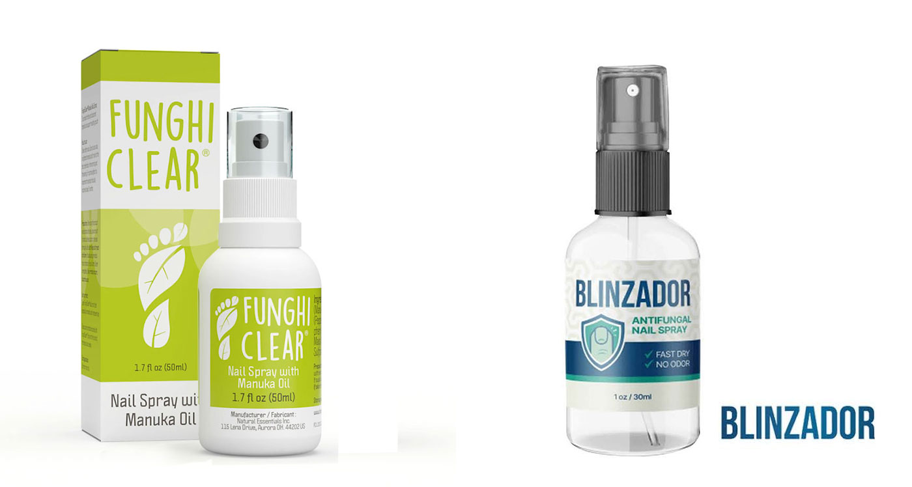
Effectiveness: 65%
Safety: 90%
Price: $29 - $39
Overall: 2.9/5 ★★★★★
Both Blinzador and FunghiClear champion the "touch-free" spray format, which is arguably the most hygienic way to treat fungus. By eliminating the need to touch the infected nail with a brush or finger, these sprays significantly reduce the risk of spreading the infection to other toes. This format is particularly popular among athletes and elderly users who struggle to reach their feet for precise application.
However, their formulations differ significantly. Blinzador positions itself as a fast-acting hybrid, combining pharmacy-grade undecylenic acid with traditional essential oils like Tea Tree and Oregano in a quick-dry alcohol base. While the "dry-touch" finish is convenient, our tests found the 30mL bottle ran out quickly (3-4 weeks), and the aggressive "countdown timer" marketing tactics raised eyebrows regarding the brand's medical seriousness.
In contrast, FunghiClear feels like the more mature, "clinic-ready" natural option. Instead of harsh Tea Tree oil, it uses New Zealand Manuka Oil (with >25% Beta-Triketone), which provides potent antimicrobial action without the stinging or strong odor associated with older remedies. Its innovative "upside-down" spray nozzle allows for easier application at difficult angles. While Blinzador focuses on speed, FunghiClear emphasizes consistency, with clinical data showing ~70% improvement after a dedicated 12-week regimen. One bottle also lasts significantly longer (6-8 weeks), making it a more cost-effective daily solution (~$0.50/day).
Pros
-
Both sprays prevent cross-contamination by eliminating direct contact.
-
Uses Manuka Oil, which is gentler and often more effective than standard Tea Tree oil.
-
Alcohol base dries instantly, making it good for quick morning application.
-
FunghiClear bottles last 6-8 weeks compared to Blinzador's 3-4 weeks.
-
FunghiClear's upside-down spray mechanism aids hard-to-reach areas.
Cons
-
FunghiClear explicitly states a 12-week timeline for results; not a quick fix
-
Blinzador's effectiveness plateaued in our tests for thicker nails
-
Both products are primarily sold online and rarely found in local pharmacies.
-
While improved, the herbal scents (Manuka/Basil for FunghiClear, Oregano for Blinzador) are still potent.
-
Aggressive sales funnels with countdown timers can erode trust
6. ARM & HAMMER BAKING SODA
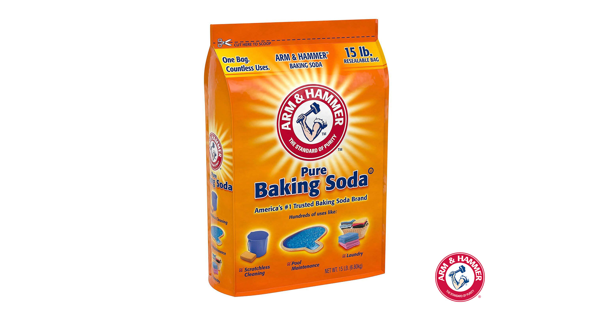
Effectiveness: 50%
Safety: 90%
Price: $18.45
Overall: 2.5/5 ★★★★★
Baking soda is a popular DIY remedy for toenail fungus, believed to absorb moisture and inhibit fungal growth. Studies suggest it may prevent fungal growth in up to 79% of cases, but its effectiveness is inconsistent,
and scientific support is limited.
Baking soda can be applied as a paste, used in foot soaks, or sprinkled into shoes to reduce moisture. While affordable and natural, it is not as fast-acting or reliable as proven treatments. Results take time and may not
fully resolve the issue.
"Patients seeking proven results should consider other options first." - Dr. Emily Splichal, DPM
Pros
-
Affordable and widely available
-
Natural and non-toxic
-
Absorbs moisture and reduce fungal growth
-
Neutralizes foot odor
-
Easy to use in multiple forms (soak, paste, or powder)
Cons
-
Limited scientific evidence
-
Does not kill fungi, only inhibits growth
-
Results are slow and inconsistent
-
Requires frequent, time-consuming applications
-
Messy to prepare and apply
-
May not penetrate deeply into the nail bed
-
Unlikely to work for severe infections
-
No guarantee of complete resolution
-
Best used as a supplemental measure
-
Could cause skin irritation with prolonged use
-
Not recommended by most medical professionals
7. NAIL REMOVAL (AVULSION)
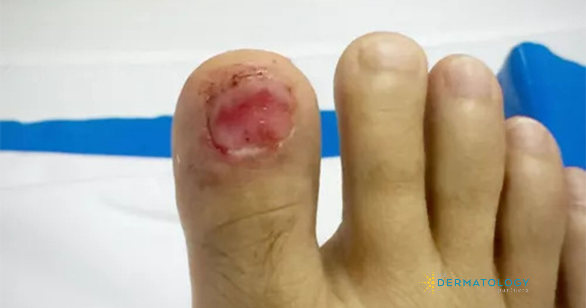
Effectiveness: 60%
Safety: 70%
Price: $150-$300 (per procedure)
Overall: 2.5/5 ★★★★★
Nail removal, or avulsion, is a treatment for severe toenail fungus involving partial or
complete removal of the nail. Non-surgical removal uses urea ointment to soften the nail for easy extraction, while surgical removal requires local anesthesia to separate the nail from the bed. Though
effective for extreme cases, it’s invasive, costly, and risky, as it can
become infected and have an irregular nail regrowth. A new nail may take
12–18 months to
grow back, and results aren’t guaranteed.
Nail removal is a last-resort option with significant risks. Doctors recommend that safer, more effective treatments should be considered first.
Pros
-
Could work in severe or long-term infections
-
Removes infected nail tissue
-
Non-surgical methods are available
-
May improve effectiveness of subsequent antifungal treatments
Cons
-
Extremely Painful, especially during and after surgical removal
-
Expensive compared to other treatment methods
-
Risk of infection if the wound isn’t properly cared for
-
Requires frequent follow-up visits to a doctor
-
Long healing time (up to 18 months for a new nail to grow)
-
New nail may grow back abnormally or remain infected
-
Not a guaranteed cure for fungal infections
-
Requires professional medical intervention
WHY OUR TEAM AND DR EMILY SPLICHAL CHOSE SWISSKER KLEARNAIL STICK AS THE BEST TOENAIL FUNGUS TREATMENT
Swissker Anti-Fungal Stick - The Best Overall Solution
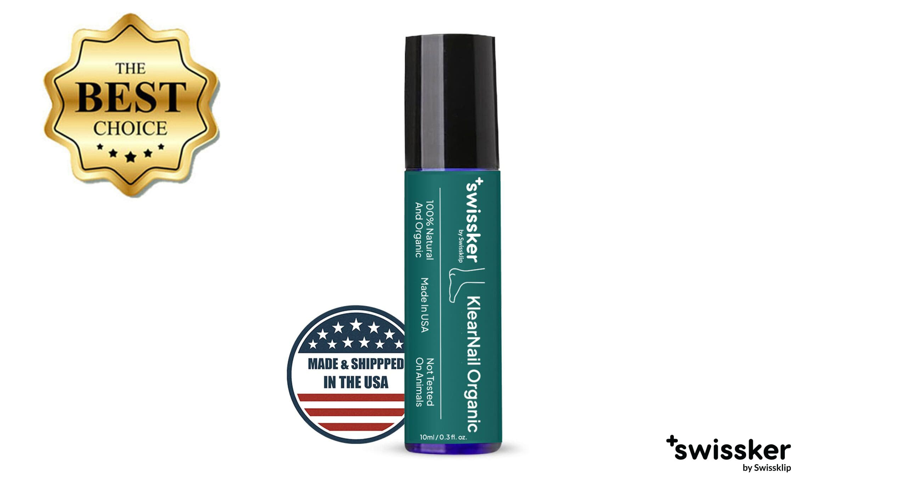
The Swissker KlearNail Anti-Fungal Stick is the ultimate toenail fungus solution, combining effectiveness, safety, and convenience in one innovative product. At just $21.99 (63% off
the regular price of $59.99), it delivers professional-grade results at an accessible price, making it the best overall choice for treating nail fungus.
"After years of struggling with toenail fungus, I was amazed at how quickly
the Swissker
Anti-Fungal Stick worked. It’s easy to use, and my nails are healthier than ever!" – Customer Review
Swissker is the perfect combination of innovation, effectiveness, and ease of use, offering a comprehensive solution to toenail fungus.
WHY CHOSE SWISSKER?
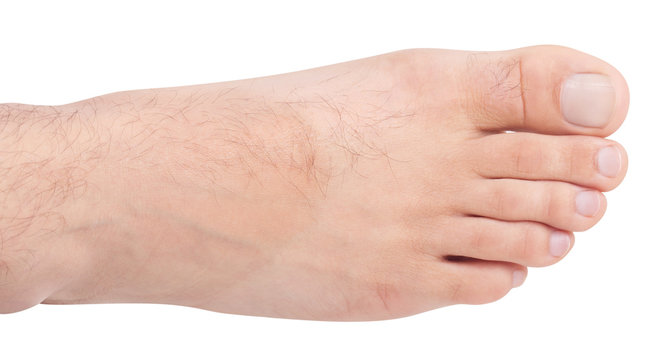
- No synthetics, standardized extracts, isolates, or unsafe fungicides
- Made in the USA.
- USDA Certified Organic – All-natural, proven formula for effective fungal healing
- Undoubtedly the 2026 best nail fungus treatment on the market
- Free from dairy, soy, corn, yeast, artificial colors, and preservatives
- Non-GMO
- Non-heated
- Non-irradiated
- Huge sale on for exceptional results at an exceptional value
- Perfect and convenient size
- Mess-free roll-on application
- Affordable – the best $ x ml from the list
- FREE Heavy Duty Toenail clipper with the Podiatrist Recommended Pack (6 Units)
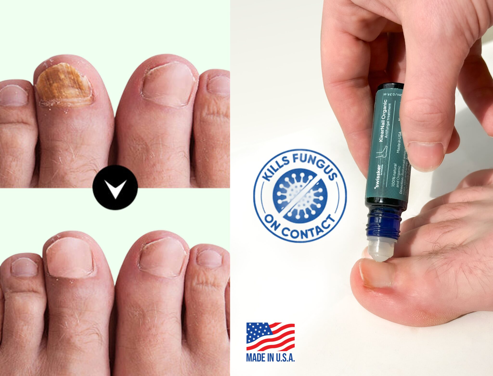
OUR FINAL VERDICT AFTER TESTING PROCESS
Best Overall Solution: Swissker Anti-Fungal Stick
The Swissker KlearNail Anti-Fungal Stick is the standout choice for tackling toenail fungus. Its advanced natural formula penetrates deep into the nail bed, delivering fast,
visible results while preventing reinfection. At $29.99 with the multi-pack
savings, it combines effectiveness, safety, and convenience, making it the most reliable and affordable option.
COMPARE THE TOP TOENAIL FUNGUS TREATMENT SOLUTIONS
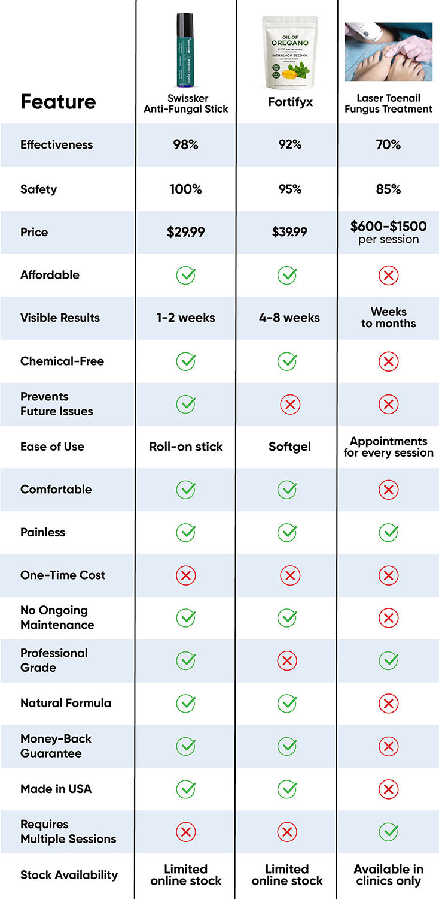
HOW TO ORDER
Visit the Official Website below to secure your exclusive discount:
- Select Your Package – Choose from single units or multi-packs for additional savings (up to 63% off).
- Place Your Order – Securely complete your purchase. You’ll receive an email confirmation, and your products will ship quickly.
- Enjoy Fast Results – Start your journey toward clear, healthy nails today!
Swissker
Anti-Fungal Stick Website
HOW MUCH DOES IT COST?
Normally, this antifungal solution retail for significantly higher, but right now you can enjoy special pricing:
- Swissker Anti-Fungal Stick: $29.99 (regular price $59.99)
Free shipping on multi-packs!

WHY IS IT SO AFFORDABLE?
Swissker’s direct-to-consumer approach eliminates retail markups, allowing them to offer premium treatments at a fraction of the price. This ensures that effective toenail fungus solutions are accessible to everyone.
Take advantage of these limited-time discounts and reclaim clear, healthy nails today!
[CLICK HERE TO
ORDER THE SWISSKER ANTI-FUNGAL STICK]